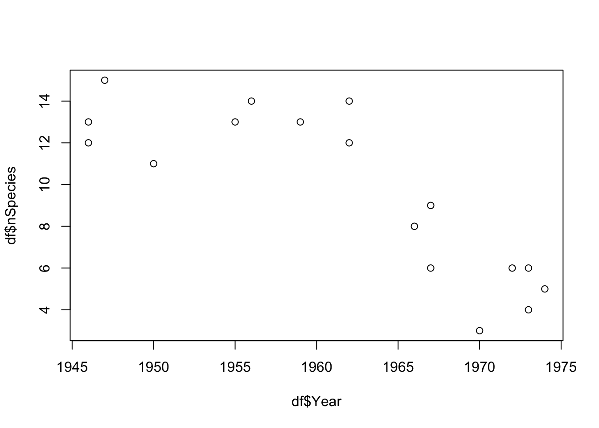

Chapter 3 An R refresher
In this course we will be learning how manipulate, visualise and analyse data statistically using R. R is a programming language for data analysis and statistics. It is free and very widely used. One of its strengths is its very wide user base which means that there are hundreds of contributed packages for every conceivable type of analysis. The aim of these introductory sections is to give a basic introduction to the programming language as a tool for importing, manipulating, and exploring data. In later sections we will learn more about statistical analysis.
Before proceeding you will need to ensure you have a recent version of R installed on your computer (the current version is 4.0.3).
Do this: Check your R version, and/or install R on your own computer now.
In this course we will not be using R on its own. Instead, we will be using it with RStudio.
R and RStudio are not the same thing. It is possible to run R without RStudio, but RStudio will not work if R is not installed. So what is RStudio? RStudio, essentially, is a helpful piece of software that makes R easier to use. The three most useful features are:
The R Console - this is where R runs inside RStudio. We can work directly with R by typing commands into this “console”. It is also where outputs (results) from R are printed to the screen.
The Code Editor - this is where you can write R programs (called “scripts”)“, which are a set of commands/instructions in the R language saved to a text file. It is much easier to work with scripts using RStudio than with ordinary text editors like Notepad. For example, it colour codes the text to make it easier to read and it will”auto-complete" some text to speed up your work.
Useful “point-and-click” tools - RStudio can help with tasks like importing data, managing files, reading help files, and managing/installing packages. Doing these things is trickier in just R: RStudio just makes things easier!
You should do your coding from within RStudio.
You can download RStudio Desktop from https://rstudio.com/products/rstudio/download/. Select the correct version for your computer (Mac/Windows) and follow the usual instructions.
Do this: Install RStudio Desktop on your computer.
3.1 Getting started with R
In RStudio, create a new “R Script” file. Scripts are essentially programs that can be saved to allow you to return to your work in the future. They also make debugging of errors much easier.
You can use the menu to do create a new R Script (File > New File > R Script), but there’s also a keyboard shortcut (Windows: Ctrl+Shift+N; Mac: Cmd+Shift+N). If you save (Windows: Ctrl+S; Mac: Cmd+S), you will be prompted for a file name. Make sure it has the suffix “.R” which denotes an R script file. Save the file in a folder with a memorable name (e.g. BB852_Work).
When you double click on this file in future, it should automatically open in RStudio (if it doesn’t you should be able to right-click and select Open with...).
In RStudio you can execute commands using the “run” icon at the top of the script window, or by selecting the text and typing the shortcut Ctrl+Enter (Windows) or Cmd+Enter (Mac). Another helpful feature of RStudio is that it will colour-code the syntax that you type, making it easier to read and debug. Note that the colours you see may be different from the ones shown in this handout.
You can customise the look of RStudio using by clicking Tools → Options menu on Windows or RStudio → Preferences on a Mac. I will point out some of this in the lecture, or you can ask me to show you.
Over the next few pages I will introduce the basics of the R programming language. Try typing them into the scripting window (top left) in RStudio and ensuring that you understand what the commands are doing. It is impossible to “break” R by typing the wrong command so I encourage you to experiment and explore the R language I introduce to you here as much as possible - it really is the best way to learn!
The “look” of RStudio can be modified by changing the Preferences (RStudio → Preferences → Appearance). Also, there are some useful keyboard shortcuts that are worth learning, to run code, save files etc. without needing to point-and-click (Tools → Keyboard Shortcuts Help).
3.2 Getting help
R features a wealth of commands, which are more properly termed functions. You will learn many of these over the next few weeks. Functions often feature a several options which are specified with arguments. For example, the function sum, has the argument ..., which is intended to be one or more vectors of numbers (see below), and the argument na.rm, which is a logical argument specifying whether or not missing values should be removed or not. Usually the arguments have default options which are used you choose not to specify them. In addition, you don’t necessarily need to fully-specify the argument if they are specified in the correct order.
You can get help on R functions from within R/RStudio with the ? and help.search commands. ? requires that you know the function name while help.search will search all the available help files for a particular word or phrase. ?? is a synonym for help.search:
?rep
help.search("bar plot")
??"bar plot"In RStudio, the help results will appear in the lower right hand area.
3.3 R as a fancy calculator
R features the usual arithmetic operations for addition, subtraction, division, multiplication:
4+3 ## [1] 79-12## [1] -36/3## [1] 27*3## [1] 21(2*7)+2-0.4## [1] 15.6R also has commands for square root (sqrt), raising to powers (^), taking the absolute value (abs), and rounding (round), natural log (log), anti-log (exp), log to base-10 (log10):
sqrt(945)## [1] 30.740853^5## [1] 243abs(-23.4)## [1] 23.4round(2.35425,digits=2)## [1] 2.35log(1.2)## [1] 0.1823216exp(1)## [1] 2.718282log10(6)## [1] 0.7781513Another thing you can do is evaluate TRUE/FALSE conditions:
3<10## [1] TRUE5>7## [1] FALSE5==5## [1] TRUE6!=5## [1] TRUE3 %in% c(1,2,3,4,5)## [1] TRUE6 %in% c(1,2,3,4,5)## [1] FALSE3.4 Objects in R
R is an object oriented programming language. This means that it represents concepts as objects that have data fields describing the object. These objects can be manipulated by functions. Objects can include data, but also models. Don’t worry about these distinctions too much for now - all will become clear as you proceed!
Objects are assigned names in R like this. The “<-” command is pronounced “gets” so I would pronounce the following as “x gets four”:
x <- 4To look at any object (function or data), just type its name.
x## [1] 4The main data object types in R are: vectors, data frames, lists and matrices. We will focus on the first two of these during this course.
A vector is simply a series of data (e.g. the sequence 1, 2, 3, 4, 5 is a vector, so is the non-numeric sequence Male, Female, Female, Male, Male ). Each item in a vector is called an element. Therefore, both of these examples contain 5 elements.
There are several ways to create vectors in R. For example, you can make vectors of integers using the colon (:) function (e.g. 1:5), or vectors of any kind of variable using the c function. c stands for concatenate, which means to join (things) together in a chain or series. Other convenient functions for making vectors are seq, which builds a sequence of numbers according to some rules, and rep which builds a vector by repeating elements a specified number of times.
Try the following:
A <- 1:5
B <- c(1,3,6,1,7,9)
C <- seq(1,12,2)
D <- seq(1,5,0.1)
E <- rep(c("Male","Female"),each = 3)
G <- rep(c("Male","Female"),c(2,4))Try modifying the commands to make sure you know what the commands are doing.
#Manipulating objects
Objects can be manipulated (just like in real life). In R, we use functions to manipulate objects.
For example, we can use the basic arithmetic functions (*, +, /,-) on a vector:
B## [1] 1 3 6 1 7 9B*3## [1] 3 9 18 3 21 27B-2## [1] -1 1 4 -1 5 7You can concatenate entire vectors together using the c function. E.g. concatenating the vectors A and B from above:
c(A,B) ## [1] 1 2 3 4 5 1 3 6 1 7 9Other manipulations are also done “element-by-element”. For example, here we multiply the first element of B by 1, the second by 2, the 3rd by 3 and so on…:
B * c(1,2,3,4,5,6)## [1] 1 6 18 4 35 54If the length of the vectors match, we can also multiply (or add/subtract/divide etc.) multiple vectors:
A / B## [1] 1.0000000 0.6666667 0.5000000 4.0000000 0.7142857 0.11111113.5 Missing values, infinity and “non-numbers”
By convention, missing values in R are coded by the value “NA”. The way that particular functions handle missing values varies: sometimes the NA values are stripped out of the data, other times the function may fail.
For example, if we asked for the mean value of a vector of numbers with an NA value, it will fail:
mean(c(1,3,6,1,7,9,NA))## [1] NAIn this case you need to specify that any NA values should be removed before calculating the mean:
mean(c(1,3,6,1,7,9,NA),na.rm=TRUE)## [1] 4.5Calculations can sometimes lead to answers that are plus, or minus, infinity. These values are represented in R by Inf or -Inf:
5/0## [1] Inf-4/0## [1] -InfOther calculations lead to answers that are not numbers, and these are represented by NaN in R:
0/0## [1] NaNInf-Inf## [1] NaN3.6 Basic information about objects
You can obtain information about most objects using the summary function:
summary(B)## Min. 1st Qu. Median Mean 3rd Qu. Max.
## 1.00 1.50 4.50 4.50 6.75 9.00The functions max, min, range, and length are also useful:
max(B)## [1] 9min(B)## [1] 1range(B)## [1] 1 9length(B)## [1] 63.7 Data frames
Data frames are the usual way of storing data in R. It is more-or-less the same as a worksheet in Excel. A data frame is usually made up of a number of vectors (of the same length) bound together in a single object. You can make a data frame by binding together vectors, or you can import them from outside R.
This example shows the creation of a data frame in R, from 3 vectors:
height <- c(173, 145, 187, 155, 179, 133)
sex <- c("Male", "Female", "Male", "Female", "Male", "Female")
age <- c(17, 22, 32, 20, 27, 30)
mydata <- data.frame(height = height, age = age, sex = sex)
mydata## height age sex
## 1 173 17 Male
## 2 145 22 Female
## 3 187 32 Male
## 4 155 20 Female
## 5 179 27 Male
## 6 133 30 FemaleData frames can be summarised using the summary function (or the str function, which gives you a different view of the same data):
summary(mydata)## height age sex
## Min. :133.0 Min. :17.00 Length:6
## 1st Qu.:147.5 1st Qu.:20.50 Class :character
## Median :164.0 Median :24.50 Mode :character
## Mean :162.0 Mean :24.67
## 3rd Qu.:177.5 3rd Qu.:29.25
## Max. :187.0 Max. :32.00str(mydata)## 'data.frame': 6 obs. of 3 variables:
## $ height: num 173 145 187 155 179 133
## $ age : num 17 22 32 20 27 30
## $ sex : chr "Male" "Female" "Male" "Female" ...Data frames can be subsetted using the square brackets [], or subset functions. With the square brackets, the first number specifies the row number, while the second number specifies the column number:
mydata[1,]## height age sex
## 1 173 17 Malemydata[,2]## [1] 17 22 32 20 27 30mydata[1,2]## [1] 17subset(mydata,sex == "Female")## height age sex
## 2 145 22 Female
## 4 155 20 Female
## 6 133 30 Female3.8 Organising your work
It would be incredibly tedious to enter real data into R by typing it in!
Thankfully, R can import data from a several data formats, and it understands the file structure of your computer. Thus, you can use spreadsheet software (like Excel) to enter and store your data, and you can organise your project work in a sensible way in folders (sometimes called directories) on your computer.
The most commonly used data format is comma separated value (CSV) so I will use that. You can also import from Excel, but the data must be formatted in a particular way to enable this (I’ll cover this in a later class).
For this course, I suggest that you make a folder somewhere on your computer called “IntroToR”. We will use this as the working directory for the remainder of the session. In RStudio you can set the working directory by clicking through the menu items Session → Set Working Directory → Choose Directory.
You can also using the setwd function to do this, if you know where your files are stored (the file path). File paths in Windows and Mac computers are expressed differently. Apple systems use the forward-slash (/) to separate folders whereas Windows can use the forward-slash (/) or double-backslash (\). In windows you also need to define the drive (e.g. C:).
So, to set the working directory in Apple OSX you would use something like this (obviously, you need to put your path!):
setwd("/Users/orj/Desktop/IntroToR")While in Windows the equivalent command would be something like this (both of the following should work):
setwd("C:\\Users\\orj\\Desktop\\IntroToR")
setwd("C:/Users/orj/Desktop/IntroToR")Typing the path in can be annoying but there are ways to speed it up. In Windows you can copy paths from the Windows Explorer location/address bar, or you can hold down the Shift key as you right-click the file, and then choose Copy As Path.
On a Mac you can copy file paths from Finder: Select your file/folder, Right click, Press the option key (on my keyboard this is the alt key) and click “Copy X as Pathname”
I can check what the current working directory is using the getwd function:
getwd()It is good practice to keep your files well-organised. I recommend that you create a folder in your working directory called CourseData (or similar). Store your data files in this folder.
On the Blackboard site for BB852 I have put a link to a Dropbox folder containing data files for use in the course. In there you will find a file called “carnivora.csv”. Download this to your new CourseData folder.
You can now import this file into R using the read.csv function. The specification of the argument header = TRUE signifies that the first row of our CSV file contains the column names. Note that your file path will be different to mine:
carni <- read.csv("CourseData/carnivora.csv", header = TRUE, stringsAsFactors = TRUE)The stringsAsFactors argument tells R to treat text-type data (technically known as “character strings”) as a special kind of data called factors. Essentially, factors are “categorical data” where the data can take a limited number of discrete values. For example, “treatmentA”, “treatmentB”, “treatmentC”. Although this may seem a little esoteric right now, it is important to ensure that your data is recognised by R in the correct way. In most cases, your text-type data will be factor data, so it is usually safe to set stringsAsFactors = TRUE.
Tip: RStudio also has a point-and-click “Wizard” to help import data. Look for “Import Dataset” in the top-right pane.
3.9 Inspecting the data
We can get some basic information on your imported data (e.g. the carni data frame) using the summary function, but also the dim and nrow/ncol functions:
summary(carni)dim(carni)## [1] 112 17nrow(carni)## [1] 112ncol(carni)## [1] 17We can find the names of the columns of a data frame with the names function:
names(carni)## [1] "Order" "SuperFamily" "Family" "Genus" "Species"
## [6] "FW" "SW" "FB" "SB" "LS"
## [11] "GL" "BW" "WA" "AI" "LY"
## [16] "AM" "IB"The first few columns are to do with the taxonomic placement of the species (Order, SuperFamily, Family, Genus and Species). There then follow several columns of life history variables: FW = Female body weight (kg), SW = Average body weight of adult male and adult female (kg), FB = Female brain weight (g), SB = Average brain weight of adult male and adult female (g), LS = Litter size, GL = Gestation length (days), BW = Birth weight (g), WA = Weaning age (days), AI = Age of independence (days), LY = Longevity (months), AM = Age of sexual maturity (days), IB = Inter-birth interval (months).
You can refer to the sub-parts of a data.frame (the columns) using the $ syntax:
summary(carni$FW)## Min. 1st Qu. Median Mean 3rd Qu. Max.
## 0.050 1.245 3.400 18.099 10.363 320.0003.10 “Classes” in R
I have already mentioned the different object types in R (e.g. vectors and data frames). The object types are technically known as “classes”. You can find out what “class” an object is by using the class function:
class(carni)## [1] "data.frame"In this case, the data frame is, unsurprisingly, of class “data.frame”. However, the vectors that compose the data frame also have classes. There are several classes of vectors including “integer” (whole numbers), “numeric” (real numbers), “factor” (categorical variables) and “logical” (true/false values).
I expect you have heard of the first two data types, but “factor” might be puzzling. Factors are defined as variables which can take on a limited number of different values. They are often referred to as categorical variables. For example, in the carnivore dataset, the taxonomic variables are factors. The different values that a factor can take are known as levels and you can check on the levels of a vector with the levels function.
class(carni$Family)## [1] "factor"levels(carni$Family)## [1] "Ailuridae" "Canidae" "Felidae" "Hyaenidae" "Mustelidae"
## [6] "Procyonidae" "Ursidae" "Viverridae"3.11 Tables and summary statistics
For vectors of class “factor” you can use the table function to give the counts for each level:
table(carni$Family)##
## Ailuridae Canidae Felidae Hyaenidae Mustelidae Procyonidae
## 1 18 19 4 30 4
## Ursidae Viverridae
## 4 32You can use the function tapply (“table apply”), to get more complex summary information. For example, I could ask what the mean female weight (FW) is in each of the families using the argument mean:
tapply(carni$FW, carni$Family, mean)## Ailuridae Canidae Felidae Hyaenidae Mustelidae Procyonidae
## 120.000000 9.050000 31.432105 33.540000 3.989000 3.642500
## Ursidae Viverridae
## 198.250000 2.6728133.12 Plotting data
Basic plots can be made using the plot command. For example, let’s have a look at the relationship between log gestation length and log female body weight (see Figure , below):
plot(log(carni$FW), log(carni$GL))
Figure 3.1: A simple scatter plot
3.13 R Packages
R packages are collections of software that add capabilities to “base R”. In this course we use several packages including dplyr, which adds functionality for manipulating data, ggplot2 which helps us make pretty plots and magrittr which adds tools to allow more “elegant” programming. Packages need to be installed using install.packages command before they can be used. You only need to install them once.
install.packages("dplyr")
install.packages("ggplot2")
install.packages("magrittr")To use the packages you need to load them with the library command, like this:
library(dplyr)
library(ggplot2)
library(magrittr)We will be using these packages a lot, and you will need to remember to load them every session. It is therefore useful to add those library commands to the top of every script you write.
3.14 Exercise: Californian bird diversity
In the 1950s-1970s there was rapid growth in the number of houses being built in California, with suburbs sprawling out into the new sites in the countryside. What effect would this have on local bird communities?
Surveys on bird abundances were carried out in several locations near Oakland, California.3 The locations were of different ages, enabling us to investigate what changes might happen through time. Although there were no surveys before the developments, we can regard the bird abundance in the very youngest housing developments as the baseline pre-development condition.
Think about what you might expect to happen to bird species diversity through time in a newly developing suburb.
3.14.1 The data
The relevant data file is called suburbanBirds.csv. This file contains data on bird abundances surveyed in 1975. The columns of the data are Name (name of the suburb), Year (the year that the suburb was built), HabitatIndex (an index of habitat quality, related to tree height, garden maturity etc.), nIndividuals (number of individual birds seen in a standard survey) and nSpecies (number of species seen in a standard survey).
Additional surveys found an average species richness of 3.5 in nearby undisturbed habitats of grassland savanna.
3.14.2 Try the following
First import the data. Check that the columns look as they should (use
summaryorstrfunctions).What is the mean, minimum, and maximum number of species seen? (there is more than one way to do this)
How old are the youngest and oldest suburbs? (hint: the survey was carried out in 1975, do the math!)
Plot the relationship between
YearandnSpeciesas a scatter plot using base-R graphics (using theplotfunction).The pattern might be easier to see if you could replace
YearBuiltwith suburb age. Create a new vector in your data frame for this variable (e.g.df$Age <- 1975 - Year)). Re-plot your results.What do the data show? What might be the mechanisms for the patterns you see? Do they match your expectations?
Export your plots and paste them into a Word Document.
If you get this far, try plotting the other variables in the dataset.
3.15 Exercise Solutions: Californian bird diversity
1. First import the data. Check that the columns look as they should. (e.g. use summary or str functions). Tip: use the “Wizard” in RStudio to guide you.
df <- read.csv("CourseData/suburbanBirds.csv")2. What is the mean, minimum, and maximum number of species seen? (there is more than one way to do this)
mean(df$nSpecies)## [1] 9.647059min(df$nSpecies)## [1] 3max(df$nSpecies)## [1] 15range(df$nSpecies)## [1] 3 15summary(df$nSpecies)## Min. 1st Qu. Median Mean 3rd Qu. Max.
## 3.000 6.000 11.000 9.647 13.000 15.0003. How old are the youngest and oldest suburbs? (hint: the survey was carried out in 1975, do the math!)
1975-min(df$Year)## [1] 291975-max(df$Year)## [1] 14. Plot the relationship between Year and nSpecies as a scatterplot using base-R graphics (using the plot function).
plot(df$Year,df$nSpecies)
5. The patern might be easier to see if you could replace YearBuilt with suburb age. Create a new vector in your data frame for this variable (e.g. df$Age <- 1975 - Year)). Replot your results.
df$Age <- 1975-df$Year
plot(df$Age,df$nSpecies)
6. What do the data show? What might be the mechanisms for the patterns you see? Do they match your expectations?
If you recall that the average species richness pre-development was about 3.5 species, the data show that suburban development is actually good for bird species. This could be surprising, but a possible explanation is that the gardens, parks, trees etc. that come with development represent additional habitats that would not normally be there. Therefore, these areas attract new species.
7. Export your plots and paste them into a Word Document.
You can do this with several methods. My favourite quick method is to click the Export button > Copy to Clipboard, resize the plot so it looks nice, then click Copy Plot. Finally, paste into Word with Cntrl (or Cmd) + V.
8. If you get this far, try plotting the other variables in the dataset.
Vale, T. R., & Vale, G. R. (1976). Suburban bird populations in west-central California. Journal of Biogeography, 157–165.↩︎